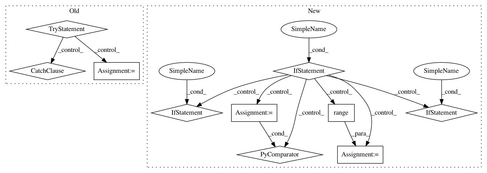

2cbc9dd07c64d9e1ed62a36b1ee48169c86d8ade,lingpy/convert/strings.py,,pap2nex,#Any#Any#Any#Any#,252
Before Change
maxTax = max([len(taxon) for taxon in taxa])
// check whether paps are dict or list
try:
paps.keys()
new_paps = []
for key in sorted(paps):
new_paps.append(paps[key])
except AttributeError:
new_paps = paps
// create the matrix
matrix = ""
for i, taxon in enumerate(taxa):
tmp = "{0:XXX} "
After Change
paps_ref = ""
// check whether paps are dict or list
if hasattr(paps, "keys"):
new_paps = [paps[k] for k in sorted(paps)]
reference = [k for k in sorted(paps)]
else:
new_paps = paps
reference = [k for k in range(1, len(paps)+1)]
// create reference
ref_string = ""
for i, ref in enumerate(reference):
ref_string += "[{0} :: {1}]\n".format(i, ref)
// create the matrix
In pattern: SUPERPATTERN
Frequency: 3
Non-data size: 10
Instances
Project Name: lingpy/lingpy
Commit Name: 2cbc9dd07c64d9e1ed62a36b1ee48169c86d8ade
Time: 2016-05-05
Author: mattis.list@uni-marburg.de
File Name: lingpy/convert/strings.py
Class Name:
Method Name: pap2nex
Project Name: lingpy/lingpy
Commit Name: 2cbc9dd07c64d9e1ed62a36b1ee48169c86d8ade
Time: 2016-05-05
Author: mattis.list@uni-marburg.de
File Name: lingpy/convert/strings.py
Class Name:
Method Name: pap2nex
Project Name: mathics/Mathics
Commit Name: deed936ca0bfa5998af0225fab99c47bd2bc4b6d
Time: 2020-09-06
Author: pablo-escobar@riseup.net
File Name: mathics/builtin/linalg.py
Class Name: Eigenvalues
Method Name: apply
Project Name: DistrictDataLabs/yellowbrick
Commit Name: ca14cf72e3e4bd3a6136cafad8701ac41f48f09b
Time: 2018-08-25
Author: davidwaterman@gmail.com
File Name: yellowbrick/cluster/elbow.py
Class Name: KElbowVisualizer
Method Name: __init__